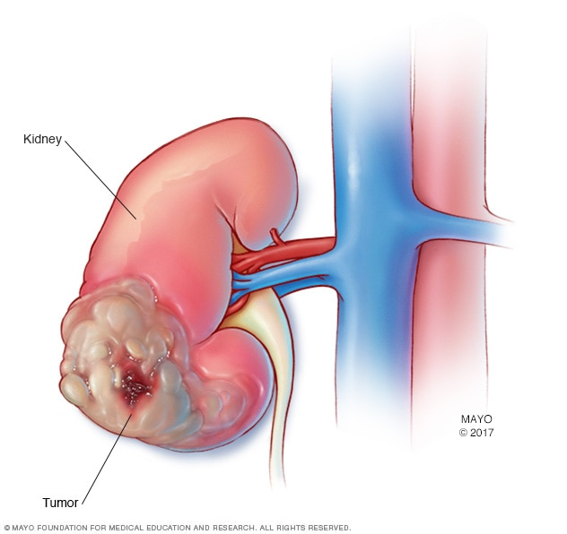
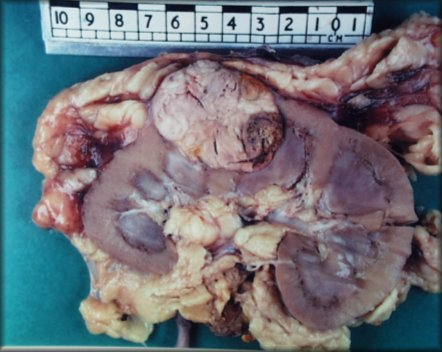
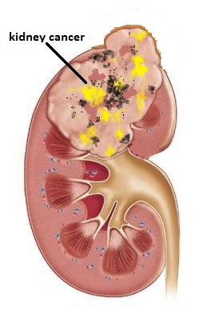
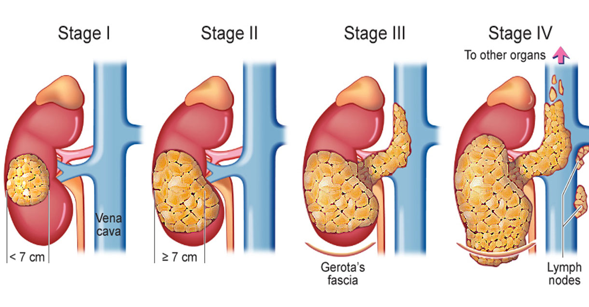
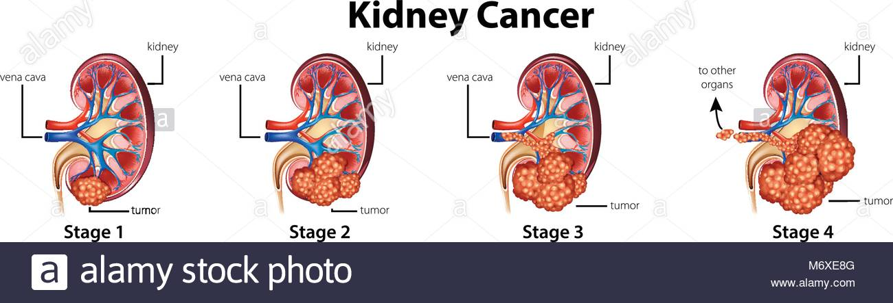
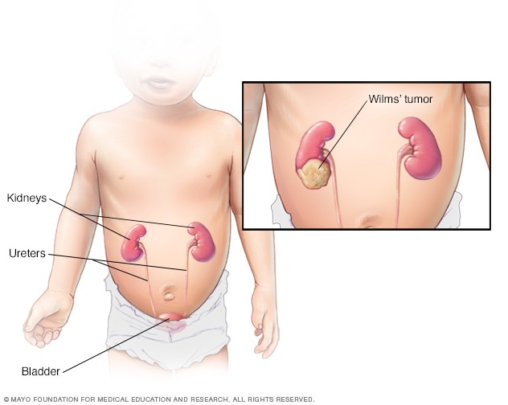

Stage 2 and 3
The Kidney Cancer
Patients with Stage II renal cell malignancy have an essential disease that is bigger than 7 centimeters (around 3 inches) in measurement. The disease is constrained to the kidney and has not spread to lymph hubs or removed destinations. Patients with Stage II renal cell malignancy are treatable with careful evacuation of the disease. Radical nephrectomy, or evacuation of the whole influenced kidney, is the standard treatment for malignant growths of this size. Be that as it may, expulsion of just the malignancy and a little fringe of typical tissue—a strategy known as an incomplete nephrectomy—has turned into the standard treatment for Stage I tumors that are under 4 centimeters in measurement and is being assessed in the treatment of bigger diseases that are precisely open.
Coming up next is a general outline of customary and insightful medicines for Stage II renal malignancy. Insightful medicines that might be accessible through clinical preliminaries are examined in the area titled Techniques to Improve Treatment. Conditions exceptional to every patient's circumstance impact which treatment or medicines are used. The potential advantages of mix treatment, support in a clinical preliminary, or standard treatment must be deliberately offset with the potential dangers. The data on this Site is expected to help teach patients about their treatment alternatives and to encourage a common or shared basic leadership process with their treating disease doctor.
Stage 2 is more genuine than stage 1. In this stage, the tumor is bigger than 7 centimeters crosswise over however just shows up in the kidney. Presently it's considered T2. However, similar to arrange 1, there's no proof that it has spread to close-by lymph hubs or different organs, so it's additionally considered N0 and M0. As in stage 1, a phase 2 harmful kidney will most likely be expelled, and follow-up treatment probably won't be vital. The five-year survival rate for stage 2 kidney malignant growth is 74 percent. That implies out of 100 individuals, 74 individuals determined to have arrange 2 kidney malignant growth are as yet alive five years in the wake of being analyzed.
he TNM framework portrays two situations for stage 3 kidney disease. In the primary situation, the tumor has developed into a noteworthy vein and close-by tissue, yet has not achieved close-by lymph hubs. This is alluded to as T3, N0, M0. In the second situation, the tumor can be any size and may show up outside the kidney. For this situation, disease cells likewise have attacked adjacent lymph hubs, however have not gone further. It's considered, T1-T3, N1, M0. In either case, treatment will be forceful. On the off chance that the malignancy has achieved the lymph hubs, they might be precisely evacuated. The five-year survival rate for stage 3 kidney malignant growth is 53 percent. That implies that out of 100 individuals, 53 individuals determined to have organize 3 kidney malignant growth will in any case be living at least five years subsequent to being analyzed.